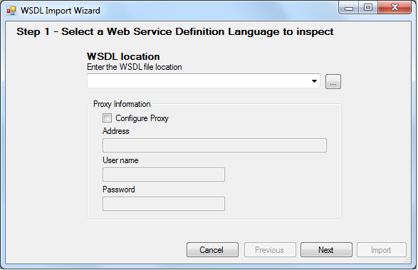

To publish a Business Component as a Web Service in order to bring the possibility of inserting, modifying and deleting the database, you have to:
1) Set the Business Component property of the Transaction to True.
2) Set the Expose as Web Service property of the Transaction to True.
Once these properties are set, you have to generate and compile the Transaction, so that the Web Service associated to the Transaction is generated and transfered to the corresponding directory (as every generated Web object is transfered).
The name of the generated program will be:
In Java Enviroment: TransactionName_bc_ws (i.e.: customer_bc_ws)
By adding the WSDL parameter to the URL in the browser (i.e.:http://localhost/BillingSystem.NetEnvironment/customer_bc.aspx?wsdl) you can see all the information that describes the Web Service (it's location, methods, parameters, etc.).
The following methods will be offered:
These methods -as it's names let see- offer the same as the Load , Save , Check and Delete Business Component methods.
Important: The only difference between the Web Service methods you are introducing and the common Business Component methods, is that the Web Service methods execute commit after executing their operations.
Suppose now that in another Knowledge Base you want to consume the Web Service published. In that Knowledge Base, you have to select in the GeneXus Menubar: Tools >Application Integration > WSDL Import. Then, the WSDL Import Wizard will be opened:

In the WSDL Location file field, you have to enter the URL where the Web Service is published with the WSDL parameter (i.e. : http://localhost/BillingSystem.NetEnvironment/customer_bc.aspx?wsdl)
In the second page of the WSDL Import Wizard you have to enter the name of the external object (EO) which will be created in the KB in order to store all the information related to the Web Service (name, properties, methods, parameters, etc.). Also, an SDT similar to the Transaction structure is created in the KB (the SDT has one property for each attribute and another property for each old value of each attribute (named: AttributeName_Z). In case of multi-level Transactions, besides the first level SDT, nested collections are defined.
Thus, you will be able to define variables based on that external object, and invoke the Web Service methods.
1) Invoking a remote service to insert a Customer
&ws.LoadKeySvc(10,&Customer) &Customer.CustomerName = 'Susan Parker' &ws.SaveSvc(&Customer)
Where:
&ws
Is based on the external object created in the KB.
&Customer
Is based on the SDT created by the WSDL Import Wizard when the WSDL was consumed.
2) Invoking a remote service to insert an Invoice
&Invoice.InvoiceId = 111 &Invoice.CustomerId = 1 &Invoiceline.Mode = 'INS' &Invoiceline = new() &Invoiceline.ProductId = 1 &Invoiceline.InvoiceLineQuantity = 10 &Invoice.InvoiceLevel.Add(&Invoiceline) &Invoiceline = new() &Invoiceline.ProductId = 2 &Invoiceline.InvoiceLineQuantity = 20 &Invoice.InvoiceLevel.Add(&Invoiceline) &ws.SaveSvc(&Invoice)
Where:
&Invoice and InvoiceLine
Are based on the SDT created by the WSDL Import Wizard when the WSDL was consumed.
&ws
Is based on the external object created in the KB.
3) Invoking a remote service to update an invoice line
&Invoice.InvoiceId = 111
&ws.LoadKeySvc(&Invoice.InvoiceId,&Invoice)
For &Invoiceline in &Invoice.Level
IF &Invoiceline.ProductId = 1
&Invoiceline.InvoiceLineQuantity = 5
&InvoiceLine.Modified = 1
Endif
endfor
&ws.SaveSvc(&Invoice)
Where:
&Invoice and InvoiceLine
Are based on the SDT created by the WSDL Import Wizard when the WSDL was consumed.
&ws
Is based on the external object created in the KB.
| Backlinks | |
| Toc:Business Component | Business Component samples |